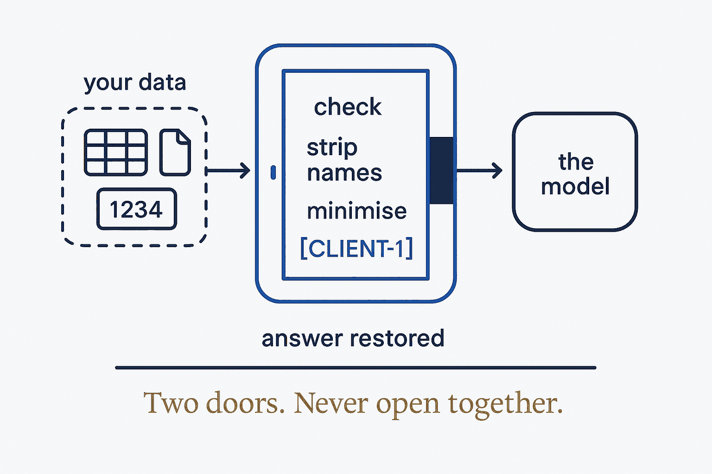

Your data and the AI model never touch directly — every crossing passes a chamber where it is checked, stripped and minimised, and the answer is restored on your side. A data firewall for AI, built as structure.

An airlock is the small chamber between two spaces that must not mix — a spacecraft and space, a cleanroom and the corridor. It works by two rules: the two doors are never open at the same time, and whatever passes is checked or cleaned in the chamber first.
Applied to AI, the inside is your raw data — or your clients': names, account numbers, amounts, files. The outside is a model running on someone else's servers. The airlock is the layer between them. Nothing goes straight from the data to the model. Every request passes the chamber, where it is checked against what may leave, stripped of identities (names and numbers become placeholders), and cut down to the minimum the question needs. The answer comes back through the same chamber, and the placeholders are turned back into real names on your side, where the key never left.
In a sales conversation the recognisable label is a data firewall for AI. The airlock is the better picture, because a firewall only lets things through or blocks them, while an airlock transforms what crosses, in both directions. (Note: security vendors use "AI firewall" for a different job — filtering attacks on the model. The airlock guards the other direction: what data leaves for the model. The inbound threat has its own concept: Content Is an Attack Surface.)
The best airlock lets almost nothing through: often the model needs only the shape of the data, not the data itself — see The Menu, Not the Kitchen. And it is structural, not behavioural: it does not depend on people remembering a rule — see The Policy Wall.